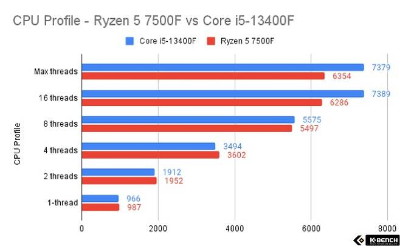

조건: FHD 영상편집을 위한(원활한 렌더링 및 프리뷰) 조립식 컴퓨터 (63만원)
FHD 영상편집을 원활히 할 수 있는 조립식 컴퓨터 조건은어떤 부품이 중요한지 그 순위를 정해야 했다. 영상 편집을 위한 컴퓨터 부품 중 중요한 순서로 나열하면 이렇다: CPU 25만원 > RAM 10만원, GPU 10만원 > 파워, 보조 메모리, 메인보드 13만원 > 케이스 2만원
CPU 자세히 알아보기CPU란 컴퓨터에서 기억, 해석, 연산, 제어의 주요 기능을 담당하는 장치이다.
그렇다면 왜 영상편집을 위해선 CPU가 중요한가해상도가 높을수록 많은 양의 데이터를 처리하게 되어서 PC에 많은 부담을 주고, 코덱 기반 영상 압축은 주로 프로세서의 처리 능력을 이용한다. 그렇기에 CPU를 가장 중요시 하고 가장 많은 투자를 할 것이다.
그렇다면 무조건 비싼 CPU가 좋은 것일까대체적으로 그렇다. 하지만 우리는 금액이 정해져 있기 때문에: 1. 멀티 코어 프로세서 2. 멀티 스레딩 3. L3 캐시 메모리 용량 위 항목을 비교하며 25-30만원 내에 CPU를 찾아볼 것이다.
CPU
1. 라이젠 5 7500F: 239,790원
https://shop.danawa.com/pc/?controller=estimateDeal&methods=productInformation&productSeq=21694499&marketPlaceSeq=162. 인텔 코어 i5-13400F: 286,630원
https://shop.danawa.com/pc/?controller=estimateDeal&methods=productInformation&productSeq=18640280&marketPlaceSeq=163. 인텔 코어 i5-9세대 9500: 239,790
https://shop.danawa.com/pc/?controller=estimateDeal&methods=productInformation&productSeq=10728438&marketPlaceSeq=16 라이젠 5 7500F와 인텔 코어 i5-13400F 비교 (F는 내장 그래픽카드가 없음을 뜻한다)| 프로세서 | 가격 | 코어 / 스레드 | 클럭 (Base) | 클럭 (Boost) | L2 / L3 캐시 | 메모리 지원 | TDP |
|---|---|---|---|---|---|---|---|
| Ryzen 5 7500F | 239,790원 | 6C / 12T | 3.7GHz | 5.0GHz | 6MB / 32MB | DDR5 5200MHz | 65W |
| Intel Core i5-13400F | 286,630원 (벌크) | P Core 6, E Core 4 / 16T | P Core - Base 2.50GHz E Core - Base 1.80GHz |
P-C 4.60GHz E-C 3.30GHz |
9MB / 20MB | DDR5 4800MHz DDR4 3200MHz |
65W |
단순 코어의 개수가 많다고 해서 무조건 좋은 것은 아니며, 클럭적인 부분에선 AMD가 우수한 편이다. 특징적인 부분은 역시 메모리 지원 부분. 라이젠 5 7500F는 DDR5만 지원하며, 최대 5200MHz 메모리 클럭이 디폴트 구성인 점 코어 i5-13400F와 비교점이다.
작업 성능에서 1,2,4 스레드에선 라이젠이 앞서나 8 스레드를 기점으로 코어 13400F가 우세한 성능을 보여준다. 하지만 6코어 12스레드에서 고정 해놓고 비교해 본다면 라이젠이 조금 더 균등한 성능을 보여준다.
AMD
1. 많은 L3 캐시 메모리를 가지고 있다 2. 가격이 저렴하다
Intel
1. 빠른 동기화 인텔 전용 코어인 Quick Sync 기술 2. 높은 호환성
선택은 라이젠이 되었다. 성능으로 봤을 때 비슷하면서도 인텔이 조금 더 앞서는 경향이 있었으나 금액이 한정된 만큼 벌크 CPU를 5만원 더 주었는데 이정도 차이밖에 나지 않는 다는 것은 가격대비 성능에선 AMD가 더 합리적이라는 생각이다.
RAM
원활한 비디오 편집을 위해선 수많은 픽셀과 데이터를 저장하며 간섭없이 더 많은 응용 프로그램을 병렬로 실행하기 위해선 램이 필요하다. 조건 DDR5 5600MHz 이상. 제조사 삼성과 sk하이닉스, Micron을 비교하였다. RPM, 메모리 대역폭 데이터, 렌더링(Cinebench R23) 시간을 따져봤을 때 순정에선 전체적으론 SK하이닉스가 제일 준수하며 Micron > 삼성의 순이다. 오버클럭에 대한 안정성은 삼성이 제일 준수하나 순정으로 사용할 시 의외로 삼성이 제일 쳐지는 결과가 나왔다 (허나 그 차이는 미미하다). 또한 어떤 채널을 사용할지도 고민이었다. 듀얼채널을 사용한다면 두 개의 메모리 모듈을 병렬로 작동 시키기에 메모리대역폭이 증가하지만 확장성이 제한된다. 하지만: 삼성전자 DDR5-5600 (8GB) 마이크론 Crucial DDR5-5600 CL46 (8GB) 가격적인 측면에서 SK하이닉스는 제품 자체가 품절이였고 삼성은 3만원, 마이크론 2.7만원으로 마이크론이 가장 저렴했다. 그러나 현재 마이크론 27-28주차 D램의 안정성의 문제가 재기되어 삼성을 선택하게 되었다.
GPU
십만원 내외에 그래픽 카드를 찾아봤을 때: RX 550 4G EVO D5 4GB 가격: 99,360원 GT1030 UD2 D5 2GB 가격: 95,040원 이렇게 두 가지 제품이 있었다. 아래는 두 가지 제품의 성능을 비교한 내용이다.
| 그래픽 카드 | 쿠다 코어 (또는 스트림 프로세서) | 부스트 클럭 | VRAM | TDP | 메모리 대역폭 |
|---|---|---|---|---|---|
| NVIDIA GT1030 | 384 개의 쿠다 코어 | 1,468 부스트 클럭 | 2 GB | 30W | 48 GB/s |
| AMD RX 550 | 512 개의 스트림 프로세서 | 1,183 부스트 클럭 | 4 GB | 50W | 96 GB/s |
보조메모리 SSD
SSD의 종류는 두 가지로 나뉘는데 SATA 방식과 PCIE(NVME) 방식으로 나뉜다. 결론적으로 봤을 때 PCIE가 더 빠르다. 그 이유는 SATA의 최대 전송률이 500MBps인데 반해 PCIE는 3.0 기준 최대 3,500MBps의 전송률을 기록한다. 그래서 게임 같은 작업에선 그렇게 큰 차이를 느끼긴 어렵지만 영상 제작이나 사진, 영상 파일 등을 불러올 때 차이가 10초 - 20초 정도 차이가 난다고 한다. 하지만 같은 500GB에서 SATA3는 4만원, PCIE3.0은 11만원으로 차이가 상당하기에 SATA 방식을 선택했다.
파워
GPU 정격 400W 이상 권장 앱코 SUITMASTER SETTLER 600W 80PLUS Standard 230V EU 해당 상품의 출력 퍼센트가 80% 정도는 안정적으로 낼 수 있다고 나와있다 이것을 계산해보면 600의 80%는 480가 된다 400W 정도는 안정적으로 출력된다고 볼 수 있어 GPU의 파워 출력 요구사항을 웃도는 수치기에 선정하게 되었다
메인보드
AMD CPU 소켓을 지원하는 메인보드 중 가장 저렴한 메인보드를 선정하였다
케이스
부품간의 공간 그리고 확장성을 고려했을 때 슬림형 보단 일반형으로 구매하는 것이 합리적이라 판단해 일반형 중 가장 저렴한 케이스를 선정하였다
사운드바
영상을 편집할 때 중요한 것 중 하나가 음향이다 알맞은 효과음을 넣을 수 있어야 하며 효과음에 맞게 화면이 전환하는 편집을 많이 사용하기에 남은 금액을 추려 사운드바에 투자하였다
피드백
정의 찾기 - 검증(맞는 내용인지, 필요한지, 장단점)
정의를 찾아왔지만 그 정의를 이해 나에게 진정 필요한 건지에 대한 논리가 부족 (검증 부족) 적용을 해야함 이 물건이 왜 필요한지 해당 권장사항이나 요구사항이 왜 그렇게 책정 되어 있는지